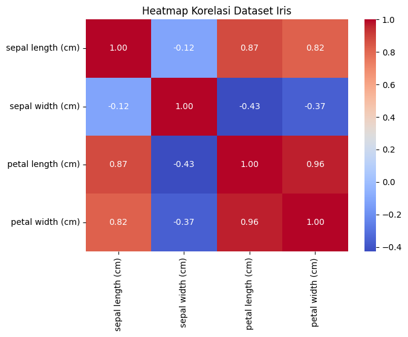
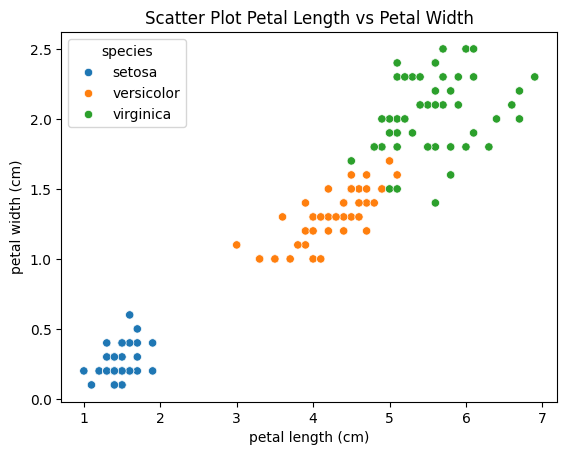
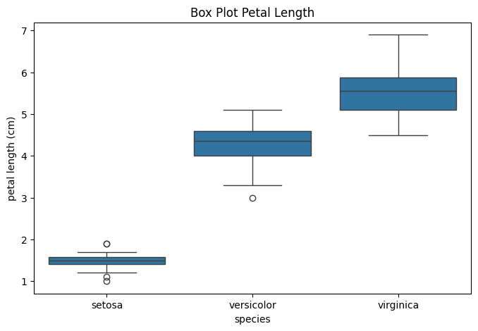

import pandas as pd
import seaborn as sns
import matplotlib.pyplot as plt
from sklearn.datasets import load_iris
---------------------------------------------------------------------------
ModuleNotFoundError Traceback (most recent call last)
Cell In[1], line 1
----> 1 import pandas as pd
2 import seaborn as sns
3 import matplotlib.pyplot as plt
ModuleNotFoundError: No module named 'pandas'
iris = load_iris()
df = pd.DataFrame(
iris.data,
columns=iris.feature_names
)
df['species'] = iris.target
df['species'] = df['species'].map({
0: 'setosa',
1: 'versicolor',
2: 'virginica'
})
df.head()
| sepal length (cm) | sepal width (cm) | petal length (cm) | petal width (cm) | species | |
|---|---|---|---|---|---|
| 0 | 5.1 | 3.5 | 1.4 | 0.2 | setosa |
| 1 | 4.9 | 3.0 | 1.4 | 0.2 | setosa |
| 2 | 4.7 | 3.2 | 1.3 | 0.2 | setosa |
| 3 | 4.6 | 3.1 | 1.5 | 0.2 | setosa |
| 4 | 5.0 | 3.6 | 1.4 | 0.2 | setosa |
df.describe()
| sepal length (cm) | sepal width (cm) | petal length (cm) | petal width (cm) | |
|---|---|---|---|---|
| count | 150.000000 | 150.000000 | 150.000000 | 150.000000 |
| mean | 5.843333 | 3.057333 | 3.758000 | 1.199333 |
| std | 0.828066 | 0.435866 | 1.765298 | 0.762238 |
| min | 4.300000 | 2.000000 | 1.000000 | 0.100000 |
| 25% | 5.100000 | 2.800000 | 1.600000 | 0.300000 |
| 50% | 5.800000 | 3.000000 | 4.350000 | 1.300000 |
| 75% | 6.400000 | 3.300000 | 5.100000 | 1.800000 |
| max | 7.900000 | 4.400000 | 6.900000 | 2.500000 |
corr = df.iloc[:,:4].corr()
corr
| sepal length (cm) | sepal width (cm) | petal length (cm) | petal width (cm) | |
|---|---|---|---|---|
| sepal length (cm) | 1.000000 | -0.117570 | 0.871754 | 0.817941 |
| sepal width (cm) | -0.117570 | 1.000000 | -0.428440 | -0.366126 |
| petal length (cm) | 0.871754 | -0.428440 | 1.000000 | 0.962865 |
| petal width (cm) | 0.817941 | -0.366126 | 0.962865 | 1.000000 |
plt.figure(figsize=(7,5))
sns.heatmap(corr, annot=True, cmap='coolwarm', fmt='.2f')
plt.title("Heatmap Korelasi Dataset Iris")
plt.show()

sns.scatterplot(
data=df,
x='petal length (cm)',
y='petal width (cm)',
hue='species'
)
plt.title("Scatter Plot Petal Length vs Petal Width")
plt.show()

plt.figure(figsize=(8,5))
sns.boxplot(data=df, x='species', y='petal length (cm)')
plt.title("Box Plot Petal Length")
plt.show()

sns.pairplot(df, hue='species')
plt.show()

X = df.iloc[:,:4]
y = df['species']
X.head(), y.head()
( sepal length (cm) sepal width (cm) petal length (cm) petal width (cm)
0 5.1 3.5 1.4 0.2
1 4.9 3.0 1.4 0.2
2 4.7 3.2 1.3 0.2
3 4.6 3.1 1.5 0.2
4 5.0 3.6 1.4 0.2,
0 setosa
1 setosa
2 setosa
3 setosa
4 setosa
Name: species, dtype: object)